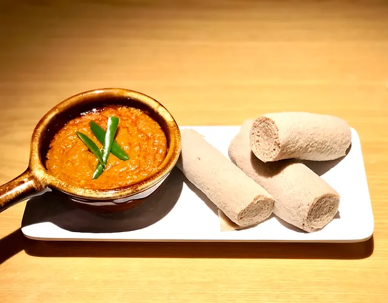

Shiro Recipe

Description
Shiro is a traditional Ethiopian dish made from powdered chickpeas or broad beans mixed with a blend of spices. It is typically cooked into a thick, flavorful stew and is often served with injera. Shiro is a popular and beloved dish in Ethiopian cuisine, known for its rich, savory taste.
Ingredients
All you need to make traditional Shiro is:
- Shiro powder (ground chickpeas or broad beans mixed with spices)
- Onion, finely chopped
- Garlic, minced
- Berbere (Ethiopian spice blend)
- Tomato paste
- Oil or niter kibbeh (Ethiopian spiced clarified butter)
- Water or vegetable broth
- Salt
- Injera (for serving)
Steps
Steps to Make Shiro:
Prepare the Ingredients:
- Finely chop the onion and mince the garlic.
- Measure out the shiro powder, berbere, and tomato paste.
Sauté the Aromatics:
- In a large pot, heat oil or niter kibbeh over medium heat.
- Add the chopped onion and sauté until it becomes soft and translucent.
- Add the minced garlic and cook for another minute.
Add the Spices and Tomato Paste:
- Add the berbere to the pot and stir well to combine with the onions and garlic.
- Add the tomato paste and continue to stir, allowing the flavors to meld together for about 2 minutes.
Add the Shiro Powder:
- Gradually add the shiro powder to the pot, stirring constantly to avoid lumps.
- Slowly pour in water or vegetable broth while stirring to reach the desired consistency. The mixture should be thick but pourable.
Simmer the Shiro:
- Reduce the heat to low and let the shiro simmer for about 15-20 minutes, stirring occasionally to prevent sticking.
- Add salt to taste and adjust the seasoning as needed.
Serve the Shiro:
- Once the shiro has thickened and the flavors are well combined, remove it from the heat.
- Serve the shiro hot with injera. It can also be enjoyed with rice or bread.
- Enjoy this delicious Ethiopian dish!